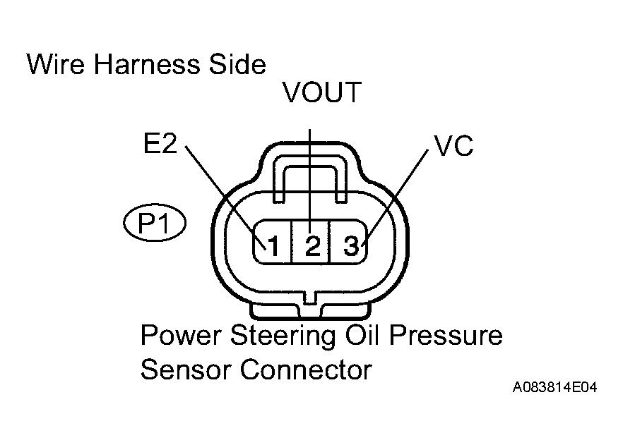

Inspection Procedure
HINT:
- If other DTCs relating to different systems that have terminal E2 as the ground terminal are output simultaneously, terminal E2 may have an open circuit.
- Read freeze frame data using the intelligent tester. Freeze frame data records the engine condition when malfunctions are detected. When troubleshooting, freeze frame data can help determine if the vehicle was moving or stationary, if the engine was warmed up or not, if the air-fuel ratio was lean or rich, and other data from the time the malfunction occurred.
- CHECK POWER STEERING OIL PRESSURE SENSOR
- Connect the intelligent tester to the DLC3.
- Turn the ignition switch ON and turn the tester ON.
- Start the engine.
- Enter the following menus: DIAGNOSIS / ENHANCED OBD II / DATA LIST / PRIMARY / PS SIGNAL.
- Read the value displayed on the tester.
OK: Go to Next Step
POWER STEERING OIL PRESSURE SENSOR CONDITIONCondition Power steering oil pressure sensor Steering wheel locked ON Engine is idling OFF
OK: CHECK FOR INTERMITTENT PROBLEMS
NG: Go to Next Step
- CHECK HARNESS AND CONNECTOR (ECM - POWER STEERING OIL PRESSURE SENSOR)
- Disconnect the E5 and E6 ECM connectors.
- Disconnect the P1 power steering oil pressure sensor connector.
- Measure the resistance of the wire harness side connectors.
Standard resistance (Check for open)
TESTER CONNECTION - SPECIFIED CONDITIONSTester Connection Specified Condition DUTY (P1-2) - PSP (E6-32) Below 1 Ω VC (P1-3) - VC (E5-18) E2 (P1-1) - E2 (E5-28) 
Courtesy of © TOYOTA, LICENSE AGREEMENT TMS1002Standard resistance (Check for short)
TESTER CONNECTION - SPECIFIED CONDITIONSTester Connection Specified Condition DUTY (P1-2) or PSP (E6-32) - Body ground 10 kΩ or higher E2 (P1-1) or E2 (E5-28) - Body ground
NG: REPAIR OR REPLACE HARNESS OR CONNECTOR
OK: REPLACE POWER STEERING OIL PRESSURE SENSOR